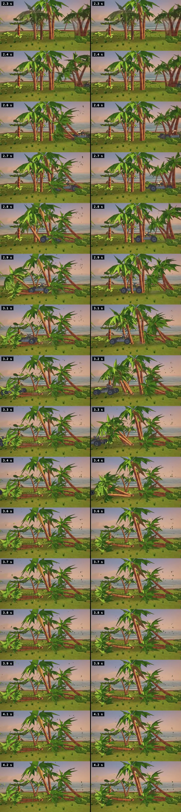
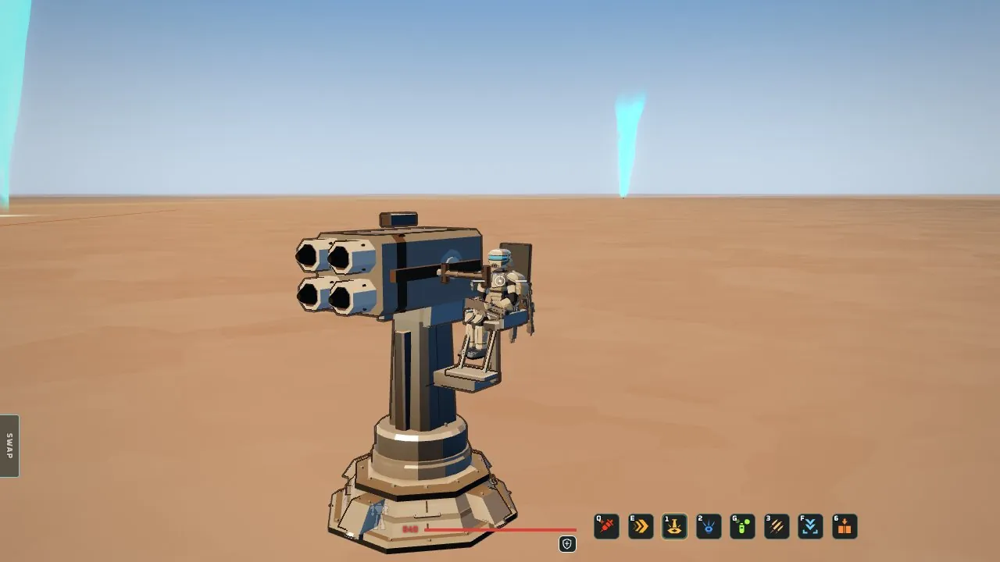

Steel Tide: to review
Version 47, 11-18 12:49 AM. New: red fliers fix, crowd AI, footprints, swim, tree fade (all before vs after). Live with no capture yet: new ride-down, gravity well 600 m, extraction countdown, fliers off the pilot, tank-top jitter. Newest first. Total 20.9 MB.
Red fliers over the island: fewer, and they creep instead of parking in review, ships next
Updated 11-18 12:30 AM ET · captured from lane build 673296defc (left: live game, right: fix)
What changed: At most 4 alive at once (was 12+); they drift slowly toward you instead of hanging still and then jumping. The dive attack is the same.
Where to look: Left vs right, whole clip: the fliers above the pilot.
Open the video on its own (3.6 MB)Footprints in the sand live M200 (round 2 look)
Updated 11-17 11:50 PM ET · captured from lane build (round 2)
What changed: Each step leaves a print that fades after about 14 s; none on water, rock or roads.
Where to look: The trail of prints behind the pilot, top middle.


Melee enemies take turns instead of piling on live M198
Updated 11-17 11:14 PM ET · captured from lane build a477f19cb (left: before, right: after)
What changed: A few close in while the rest circle you; before, the whole swarm covered the pilot.
Where to look: From 3 s: left the pilot is buried, right the pilot stays visible inside a ring.
Open the video on its own (2.5 MB)Pilot swim animation live M193
Updated 11-17 9:48 PM ET · captured from lane build (left: before, right: after)
What changed: The pilot now swims with strokes instead of sliding in a standing pose.
Where to look: Pilot in the water, lower middle of each half.
Open the video on its own (1.4 MB)Trees thin out when they block your view live M189
Updated 11-17 8:10 PM ET · captured from lane build (left: before, right: after)
What changed: Trees between the camera and your vehicle turn see-through so you can still see it.
Where to look: At 2 s and 4 s: left the rover is hidden by trunks, right it shows through.
Open the video on its own (1.2 MB)Pilot shoulder no longer jitters live M188
Updated 11-17 7:50 PM ET · captured from lane build (left: before, right: after)
What changed: The gun shoulder holds steady while aiming and turning.
Where to look: The pilot's right shoulder in the middle of each half.
Open the video on its own (0.2 MB)Drone gun spins and flashes when it fires live M188
Updated 11-17 7:45 PM ET · captured from lane build
What changed: The barrels spin up, flash at the tip and throw shells.
Where to look: At 4 s: the flash at the barrel tip, right side.
Open the video on its own (1.8 MB)Trees fall with weight when the Land Rover hits them live M182
Updated 11-17 5:17 PM ET · captured from lane build bb3771d91c (left: live game, right: fix)
What changed: Trees no longer drop like a pin: each one leans, speeds up, falls off at its own side angle and settles; a faster car still fells them a little quicker.
Where to look: The clip from 0.5 s: left side drops flat in about 0.3 s, right side leans then falls at different angles.

Open the video on its own (0.5 MB)Rocket sentry: the pilot sits in it, hands on the handle in review, not live (round 3)
Updated 11-17 1:45 PM ET · captured from lane build, on the Test Range
What changed: Round 3. The pilot now has a pose made for this seat: both hands on the handle bar, feet on the footplate, legs clear of the frame. The footplate was raised a little and the two frame bars spread slightly so they no longer cross his legs. If the sentry is destroyed under him he ends up standing on the ground.
Where to look: First still (enlarged): side view and front view; check the hands on the bar and that no bar crosses a leg. Clip: climb on, turn left, turn right, tilt up, fire, climb off, then your own view. Third still: your view while manned, live build on the left, new on the right.


 Open the video on its own (0.9 MB)
Open the video on its own (0.9 MB)NEEDS YOUR CALL: island Horde, camera zooms in when you are on foot built, not live: waiting for your call on how close
Updated 11-17 1:30 PM ET · captured from lane build, island Horde, 1920x1080; top half = the live build, bottom half = the change, same script
What changed: On foot the camera now eases in from 110 to 40 (the mech view is unchanged). The pilot goes from about 7 pixels tall to about 20. That is still small: it stops there so you can see enemies 2 seconds before they reach you.
Where to look: Clip: top is before, bottom is after. At about 4 seconds the pilot leaves the mech and the bottom view eases in; at the end he re-enters and it eases back out. Still: the same on-foot moment, before on the left, after on the right; the pilot is the small figure right of the mech.
 Open the video on its own (2.7 MB)
Open the video on its own (2.7 MB)Pilot dash: faster return to stance (clip, old above new) live M168
Updated 11-17 12:35 PM ET · captured from Test Range, play camera; OLD = the same build with the 'Dash recovery: quick' switch off
What changed: Now a clip instead of stills. Old on top, new below, the same five dashes in sync (forward, back, left, right, diagonal), then the whole pass again at half speed.
Where to look: Watch the half second after each dash ends: the old pilot is still leaning when the new one is already upright. The poses themselves are the same.
Open the video on its own (3.4 MB)Test range: the mech's turn and stop, close up built, not live
Updated 11-17 12:25 AM ET · captured from range lane build on an older base, not the live game
What changed: First range clip with the mech filling the frame. Earlier range clips showed it small in the distance.
Where to look: Watch the legs and torso as it skates, turns and stops. The player HUD is drawn across the mech in this capture; that is a fault of the capture, not of the game.
 Open the video on its own (1.7 MB)
Open the video on its own (1.7 MB)